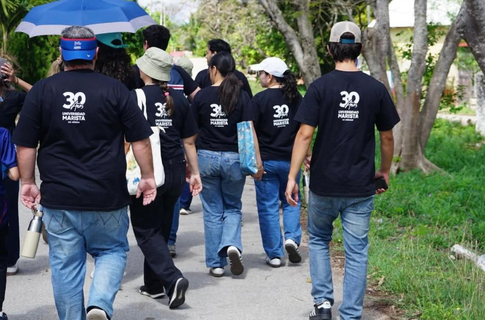

Estamos para acompañarte en tu crecimiento espiritual, humano, comunitario y cristiano en los siguientes ejes:


Coordinación General de Pastoral

Coordinador de Pastoral Catequética

Encargado de Pastoral Solidaria
Director de Deportes y Pastoral

Asesor de Rectoría y de Pastoral
Estamos en el edificio de Rectoría. Contáctanos: carismayvida@marista.edu.mx Tel. 999 942 9700 Ext. 1112